CS229
Lecture notes
翻译：CycleUser
Part XIII
强化学习（Reinforcement Learning）和控制（Control）
这一章我们就要学习强化学习（reinforcement
learning）和适应性控制（adaptive control）了。在监督学习（supervised learning）中，我们已经见过的一些算法，输出的标签类 y 都是在训练集中已经存在的。这种情况下，对于每个输入特征 x，都有一个对应的标签作为明确的“正确答案（right answer）”。与之相反，在很多的连续判断（sequential decisions making）和控制（control）的问题中，很难提供这样的明确的显示监督（explicit supervision）给学习算法。例如，假设咱们制作了一个四条腿的机器人，然后要编程让它能走路，而我们并不知道怎么去采取“正确”的动作来进行四条腿的行走，所以就不能给他提供一个明确的监督学习算法来进行模仿。在强化学习（reinforcement learning）的框架下，我们就并不提供监督学习中那种具体的动作方法，而是只给出一个奖励函数（reward function），这个函数会告知学习程序（learning agent） 什么时候的动作是好的，什么时候的是不好的。在四腿机器人这个样例中，奖励函数会在机器人有进步的时候给出正面回馈，即奖励，而有退步或者摔倒的时候给出负面回馈，可以理解成惩罚。接下来随着时间的退役，学习算法就会解决如何选择正确动作以得到最大奖励。
强化学习（Reinforcement
learning，下文中缩写为 RL）已经成功用于多种场景了，例如无人直升机的自主飞行，机器人用腿来运动，手机的网络选择，市场营销策略筛选，工厂控制，高效率的网页索引等等。我们对强化学习的探索，要先从马尔可夫决策过程（Markov decision processes，缩写为 MDP）开始，这个概念给出了强化学习问题的常见形式。
1 马尔可夫决策过程（Markov decision processes）
一个马尔可夫决策过程（Markov
decision process）由一个元组（tuple）： (S, A, {Psa}, γ, R)组成，其中元素分别为：
1.
S 是一个状态集合（a set of states）。（例如，在无人直升机飞行的案例中，S 就可以是直升机所有的位置和方向的集合。）
2.
A 是一个动作结合（a set of actions）。（例如，还以无人直升机为例，A 就可以是遥控器上面能够操作的所有动作方向。）
3.
Psa 为状态转移概率（state transition probabilities）。对于每个状态 s ∈ S 和动作 a ∈ A， Psa 是在状态空间上的一个分布（a distribution over the state space）。后面会再详细讲解，不过简单来说， Psa 给出的是在状态 s 下进行一个动作 a 而要转移到的状态的分布。
4.
γ ∈ [0, 1] 叫做折扣因子（discount factor）。
5.
R : S × A → R 就是奖励函数（reward function）。（奖励函数也可以写成仅对状态 S 的函数，这样就可以写成 R : S → R。）
马尔可夫决策过程（MDP）的动力学（dynamics）过程如下所示：于某个起始状态 s0 启动，然后选择某个动作 a0 ∈ A 来执行 MDP 过程。根据所选的动作会有对应的结果，MDP 的状态则转移到某个后继状态（successor state），表示为 s1，根据 s1 ∼ Ps0a0 得到。然后再选择另外一个动作 a1，接下来又有对应这个动作的状态转移，状态则为 s2 ∼ Ps1a1。接下来在选择一个动作 a2，就这样进行下去。可以用下面的过程来作为表示：

通过序列中的所有状态 s0, s1, . . . 和对应的动作 a0, a1, . . .，就你能得到给出的总奖励值，即总收益函数（total payoff）为 R(s0,a0) + γR(s1,a1) + γ2R(s2,a2) + ···。如果把奖励函数只作为仅与状态相关的函数，那么这个值就简化成了 R(s0) + γR(s1) + γ2R(s2) + ···。多数情况下，我们都用后面这种仅为状态的函数这种形式，虽然扩展到对应状态-动作两个变量的函数 R(s,a) 也并不难。
强化学习的目标就是找到的一组动作，能使得总收益函数（total payoff）的期望值最大：
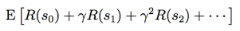
注意，在时间步长（timestep） t 上的奖励函数（reward）通过一个参数（factor）γt而进行了缩减（discounted）。因此，要使得期望最大化，就需要尽可能早积累符号为正的奖励（positive rewards），而尽量推迟负面奖励（negative rewards，即惩罚）的出现。在经济方面的应用中，其中的 R(·) 就是盈利金额（amount of money made），γ 也可以理解为利润率（interest rate）的表征，这样有自然的解释（natural interpretation），例如今天的一美元就比明天的一美元有更多价值。
有一种策略（policy），是使用任意函数 π : S → A，从状态（states）到动作（actions）进行映射（mapping）。如果在状态 s，采取动作 a = π(s)，就可以说正在执行（executing）某种策略（policy） π。然后还可以针对策略函数（policy）π 来定义一个值函数（value function）：

Vπ(s) 就是从状态 s 开始，根据 π 给出的动作来积累的部分奖励函数（discounted rewards）的期望总和（expected sum）。1
1 实际上这里我们用 π 这个记号来表示，严格来说不太正确，因为 π 并不是一个随机变量，不过在文献里面这样表示很多，已经成了某种事实上的标准了。
给定一个固定的策略函数（policy） π，则对应的值函数 V π 满足贝尔曼等式（Bellman equations）：

This says that the
expected sum of discounted rewards Vπ(s) for starting in s consists of two
terms: First, the immediate reward R(s) that we get rightaway
simply for starting in state s, and second, the
expected sum of future discounted rewards. Examining the second term in more
detail, we see that the summation term above can be rewritten Es′∼Psπ(s) [V π(s′)]. This is the expected sum of discounted
rewards for starting in state s′, where s′ is distributed according Psπ(s), which is the distribution over where we will
end up after taking the first action π(s) in the MDP from state
s. Thus, the second term above gives the expected sum of
discounted rewards obtained after the first step in the MDP.
这也就意味着，从状态 s 开始的这个部分奖励（discounted rewards）的期望总和（expected sum） Vπ(s) 由两部分组成：首先是在状态 s 时候当时立即获得的奖励函数值 R(s)，也就是上面式子的第一项；另一个就是第二项，即后续的部分奖励函数值（discounted rewards）的期望总和（expected sum）。对第二项进行更深入的探索，就能发现这个求和项（summation term）可以写成 Es′∼Psπ(s) [V π(s′)] 的形式。这种形式也就是从状态 s′ 开始的这个部分奖励（discounted rewards）的期望总和（expected sum） Vπ(s′)，此处的 s′ 是根据 Psπ(s) 分布的，在 MDP 过程中从状态 s 采取第一个动作 π(s) 之后，确定了这个分布所在的空间。因此，上面的第二项实际上也就是给出了在 MDP 过程中第一步之后的部分奖励（discounted rewards）的期望总和（expected sum）。
贝尔曼等式（Bellman’s
equations）可以有效地解出 Vπ。尤其是在一个有限状态的 MDP
过程中，即 (|S| < ∞)，我们可以把每个状态 s 对应的 V π (s) 的方程写出来。这样就得到了一系列的 |S | 个线性方程，有 |S | 个变量（也就是对应每个状态的未知的 Vπ(s) ），这些 Vπ(s) 都很容易解出来。
然后可以定义出最优值函数（optimal value function）

换一种说法，这个值也就是能用任意一种策略函数（policy）来获得的，最佳的可能部分奖励（discounted rewards）的期望总和（expected sum）。另外对于最优值函数（optimal value function），也有一个版本的贝尔曼等式（Bellman’s equations）：

上面这个等式中的第一项，还是跟之前一样的，还是即时奖励函数值。第二项是在采取了动作 a 之后的所有动作 a 的部分奖励（discounted rewards）的未来期望总和（expected future sum）的最大值。要确保理解这个等式，并且要明白为什么这个等式有意义。
（译者注：抱歉，这里的这个 discounted
rewards 弄得我不知道怎么翻译才顺，意思表达得很狗，非常抱歉。）
另外还定义了一个策略函数（policy） π∗ : S → A，如下所示

注意，这里的 π∗(s) 给出的动作 a 给出的在上面等式（2）当中能够使 “max” 项取最大值。对于每个状态 s 和每个策略函数（policy）π，都有：
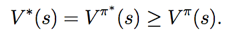
上面的第一个等式关系表明，对应策略函数（policy） π∗的值函数（value function）V π∗ 等于对于每个状态 s 的最优值函数 V ∗。右边的不等式则表明，π∗ 的值至少也等于任意其他策略函数的值。也就是说，上面在等式（3）当中定义的这个 π∗ 就是最佳策略函数（optimal policy）。
注意，这个 π∗ 有一个有趣的特性，它是所有状态 s 下的最佳策略。具体来讲，并不是说只是如果从某个状态 s 开始 MDP 过程，这个 π∗ 是对应这个状态的最佳策略，而如果从某个别的状态 s′ 开始就有其他的最佳策略。而是对于所有的状态 s，都是同样的一个策略函数 π∗ 能够使得等式（1）中的项目取得最大值。这也就意味着无论 MDP 过程的初始状态（initial state）如何，都可以使用同样的策略函数 π∗。
2 值迭代（Value iteration）和策略迭代（policy iteration）
现在我们要讲两种算法，都能很有效地解决有限状态的马尔可夫决策过程问题（finite-state MDPs）。目前为止，我们只考虑有限状态和动作空间的马尔可夫决策过程，也就是状态和动作的个数都是有限的，即|S| < ∞, |A| < ∞。
第一种算法，值迭代（value
iteration），过程如下所述：
1. 对每个状态 s, 初始化 V (s) := 0.
2. 重复直到收敛 {
对每个状态，更新规则 
}
这个算法可以理解成，利用贝尔曼等式（Bellman Equations）（2）重复更新估计值函数（estimated
value function）。
在上面的算法的内部循环体中，有两种进行更新的方法。首先，我们可以为每一个状态 s 计算新的值 V (s)，然后用新的值覆盖掉所有的旧值。这也叫做同步更新（synchronous update）。在这种情况下，此算法可以看做是实现（implementing）了一个“贝尔曼备份运算符（Bellman backup operator）”，这个运算符接收值函数（value function）的当前估计（current estimate），然后映射到一个新的估计值（estimate）。（更多细节参考作业题目中的内容。）
另外一种方法，就可以使用异步更新（asynchronous updates）。使用这种方法，就可以按照某种次序来遍历（loop over）所有的状态，然后每次更新其中一个的值。
无论是同步还是异步的更新，都能发现最终值迭代（value iteration）会使 V 收敛到 V
∗ 。找到了 V ∗ 之后，就可以利用等式（3）来找到最佳策略（optimal policy）。
除了值迭代（value iteration）之外，还有另外一种标准算法可以用来在马尔可夫决策过程（MDP）中寻找一个最佳策略（optimal policy）。这个策略循环（policy iteration）算法如下所述：
1. 随机初始化 π。
2. 重复直到收敛{
(a) 令 V := V
π.
(b)
对每个状态 s，令 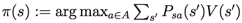
}
因此，在循环体内部就重复计算对于当前策略（current policy）的值函数（value function），然后使用当前的值函数（value function）来更新策略函数（policy）。（在步骤 b 中找到的策略 π 也被称为对应 V 的贪心策略（greedy with respect to V）。）注意，步骤 a 可以通过解贝尔曼等式（Bellman’s equation）来实现，之前已经说过了，在固定策略（fixed policy）的情况下，这个等式只是一系列有 |S| 个变量（variables）的 |S| 个线性方程（linear equations）。
在上面的算法迭代了某个最大迭代次数之后，V 将会收敛到 V
∗，而 π 会收敛到 π∗。
值迭代（value iteration）和策略迭代（policy iteration）都是解决马尔可夫决策过程（MDPs）问题的标准算法， 而且目前对于这两个算法哪个更好，还没有一个统一的一致意见。对小规模的 MDPs 来说，策略迭代（policy iteration）通常非常快，迭代很少的次数就能瘦脸。然而，对有大规模状态空间的 MDPs，确切求解 V π就要涉及到求解一个非常大的线性方程组系统，可能非常困难。对于这种问题，就可以更倾向于选择值迭代（value iteration）。因此，在实际使用中，值迭代（value iteration）通常比策略迭代（policy iteration）更加常用。
3 学习一个马尔可夫决策过程模型（Learning a model for an MDP）
目前为止，我们已经讲了
MDPs，以及用于 MDPs 的一些算法，这都是基于一个假设，即状态转移概率（state transition probabilities）以及奖励函数（rewards）都是已知的。在很多现实问题中，却未必知道这两样，而是必须从数据中对其进行估计。（通常 S，A 和 γ 都是知道的。）
例如，加入对倒立摆问题（inverted
pendulum problem，参考习题集 4），在 MDP 中进行了一系列的试验，过程如下所示：
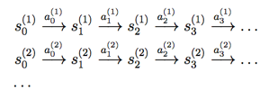
Here, si(j) is the state we were at time i of trial
j, and ai (j) is the
corresponding action that was taken from that state. In practice, each of the
trials above might be run until the MDP terminates (such as if the pole falls over in the inverted
pendulum problem), or it might be run for some large but finite number of
timesteps.
其中 si(j) 表示的是第 j 次试验中第 i 次的状态，而 ai (j) 是该状态下的对应动作。在实践中，每个试验都会运行到 MDP 过程停止（例如在倒立摆问题（inverted
pendulum problem）中杆落下（pole falls）），或者会运行到某个大但有限个数的时间步长（timesteps）。
有了在 MDP 中一系列试验得到的“经验”，就可以对状态转移概率（state transition probabilities）推导出最大似然估计（maximum likelihood estimates）了：

Psa(s’)= (在状态 s 执行动作 a 而到达状态 s’ 花的时间)/(在状态 s 执行动作 a 花的时间) (4)
或者，如果上面这个比例出现了“0/0”的情况，对应的情况就是在状态 s 之前没进行过任何动作 a，这样就可以简单估计 Psa(s′) 为 1/|S|。（也就是说把 Psa 估计为在所有状态上的均匀分布（uniform distribution）。）
注意，如果在 MDP 过程中我们能获得更多经验信息（观察更多次数），就能利用新经验来更新估计的状态转移概率（estimated state transition
probabilities），这样很有效率。具体来说，如果我们保存下来等式（4）中的分子（numerator）和分母（denominator）的计数（counts），那么观察到更多的试验的时候，就可以很简单地累积（accumulating）这些计数数值。计算这些数值的比例，就能够给出对 Psa 的估计。
利用类似的程序（procedure），如果奖励函数（reward） R 未知，我们也可以选择在状态 s 下的期望即时奖励函数（expected immediate reward） R(s) 来当做是在状态 s 观测到的平均奖励函数（average reward）。
学习了一个 MDP 模型之后，我们可以使用值迭代（value iteration）或者策略迭代（policy iteration），利用估计的状态转移概率（transition probabilities）和奖励函数，来去求解这个 MDP 问题。例如，结合模型学习（model learning）和值迭代（value iteration），就可以在未知状态转移概率（state transition probabilities）的情况下对 MDP 进行学习，下面就是一种可行的算法：
1. 随机初始化 π 。
2. 重复 {
(a) 在 MDP 中执行 π 作为若干次试验（trials）。
(b) 利用上面在 MDP 积累的经验（accumulated experience），更新对 Psa 的估计（如果可以的话也对奖励函数 R 进行更新）。
(c) 利用估计的状态转移概率（estimated state transition probabilities）和奖励函数（rewards），应用值迭代（value iteration），得到一个新的估计值函数（estimated value function） V。
(d) 更新 π 为与 V 对应的贪婪策略（greedy policy）。
}
我们注意到，对于这个特定的算法，有一种简单的优化方法（optimization），可以让该算法运行得更快。具体来说，在上面算法的内部循环中，使用了值迭代（value iteration），如果初始化迭代的时候不令 V = 0 启动，而是使用算法中上一次迭代找到的解来初始化，这样就有了一个更好的迭代起点，能让算法更快收敛。
4 连续状态的马尔可夫决策过程（Continuous state MDPs）
目前为止，我们关注的都是有限个状态（a finite number of states）的马尔可夫决策过程（MDPs）。接下来我们要讲的就是有无限个状态（an infinite number of states）的情况下的算法。例如，对于一辆车，我们可以将其状态表示为 (x, y, θ, x ̇,y ̇,θ ̇)，其中包括位置（position） (x, y)，方向（orientation）θ， 在 x 和 y 方向的速度分量 x ̇ 和 y ̇，以及角速度（angular velocity）θ ̇。这样，S = R6 就是一个有无限的状态集合，因为一辆车的位置和方向的个数是有无限可能的2。与此相似，在习题集4 中看到的倒立摆问题（inverted pendulum）中，状态也有 ，其中的 θ 是杆的角度。在直升机飞行的三维空间中，状态的形式则为
，其中的 θ 是杆的角度。在直升机飞行的三维空间中，状态的形式则为 ，其中包含了滚动角（roll）φ，俯仰角（pitch）θ，以及偏航角（yaw）ψ，这几个角度确定了直升机在三维空间中的运动方向。在本节中，我们考虑状态空间为 S = Rn 的情况，并描述此种情况下解决 MDPs 的方法。
，其中包含了滚动角（roll）φ，俯仰角（pitch）θ，以及偏航角（yaw）ψ，这几个角度确定了直升机在三维空间中的运动方向。在本节中，我们考虑状态空间为 S = Rn 的情况，并描述此种情况下解决 MDPs 的方法。
2从理论上讲，θ 是一个方向（orientation），所以更应当把 θ 的取值空间写为 θ
∈ [−π, π]，而不是写为实数集合 θ ∈ R；不过在我们讨论的问题中，这种区别不要紧。
4.1 离散化（Discretization）
解决连续状态 MDP 问题最简单的方法可能就是将状态空间（state space）离散化（discretize），然后再使用之前讲过的算法，比如值迭代（value iteration）或者策略迭代（policy iteration）来求解。
例如，假设我们有一个二维状态空间（s1，s2），就可以用下面的网格（grid）来将这个状态空间离散化：
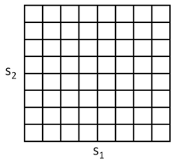
如上图所示，每个网格单元（grid
cell）表示的都是一个独立的离散状态 s̄。这样就可以把一个连续状态 MDP 用一个离散状态的 (S ̄, A, {Ps ̄a}, γ, R) 来进行逼近，其中的S ̄ 是离散状态集合，而{Ps ̄a} 是此离散状态上的状态转移概率（state transition probabilities），其他项目同理。然后就可以使用值迭代（value iteration）或者策略迭代（policy iteration）来求解出离散状态的 MDP (S ̄, A, {Ps ̄a}, γ, R)
的 V
∗(s ̄) 和 π∗(s ̄)。当真实系统是某种连续值的状态 s ∈ S，而有需要选择某个动作来执行，就可以计算对应的离散化的状态 s ̄，然后执行对应的动作 π∗(s ̄)。
这种离散化方法（discretization
approach）可以解决很多问题。然而，也有两个缺陷（downsides）。首先，这种方法使用了对 V
∗ 和 π∗ 相当粗糙的表征方法。具体来说，这种方法中假设了在每个离散间隔（discretization intervals）中的值函数（value function）都去一个常数值（也就是说，值函数是在每个网格单元中分段的常数。）。
要更好理解这样表征的的局限性，可以考虑对下面这一数据集进行函数拟合的监督学习问题：
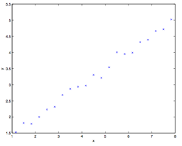
很明显，上面这个数据适合使用线性回归。然而，如果我们对 x 轴进行离散化，那么在每个离散间隔中使用分段常数表示，对同样的数据进行拟合，得到的曲线则如下所示：
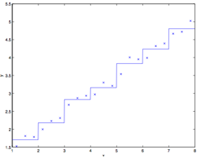
This piecewise
constant representation just isn’t a good representation for many smooth
functions. It results in
little smoothing over the inputs, and no generalization over the different grid
cells. Using this sort of representation, we would also need a very fine
discretization (very small grid cells) to get a good approximation.
这种分段常数表示，对于很多的光滑函数，都不能算好。这会导致输入值缺乏平滑（little smoothing over the inputs），而且在不同的望各单元中间也没有进行扩展（generalization）。使用这种表示方法，我们还需要一种非常精细的离散化过程（也就是网格单元要非常小），才能得到一个比较好的近似估计。
第二个缺陷可以称之为维度的诅咒（curse of dimensionality）。设 S
= Rn ，然后我们队每个 n 维度状态离散成 k 个值。这样总共的离散状态的个数就是 kn。在状态空间 n 的维度中，这个值会呈指数级增长，对于大规模问题就不好缩放了。例如，对于一个 10 维的状态，如果我们把每个状态变量离散化成为 100 个值，那么就会有 10010 = 1020 个离散状态，这个维度太大了，远远超过了当前桌面电脑能应付的能力之外。
根据经验法则（rule of thumb），离散化通常非常适合用于 1 维和 2 维的问题（而且有着简单和易于快速实现的优势）。对于 4 维状态的问题，如果使用一点小聪明，仔细挑选离散化方法，有时候效果也不错。如果你超级聪明，并且还得有点幸运，甚至也有可能将离散化方法使用于 6维问题。不过在更高维度的问题中，就更是极其难以使用这种方法了。
4.2 值函数近似（Value function approximation）
现在我们来讲另外一种方法，能用于在连续状态的 MDPs 问题中找出策略，这种方法也就是直接对进行近似 V ∗，而不使用离散化。这个方法就叫做值函数近似（value function approximation），在很多强化学习的问题中都有成功的应用。
4.2.1 使用一个模型或模拟器（Using a model or simulator）
要开发一个值函数近似算法，我们要假设已经有一个对于 MDP 的模型，或者模拟器。简单来看，一个模拟器就是一个黑箱子（black-box），接收输入的任意（连续值的）状态 st 和动作 at，然后输出下一个状态 st+1，这个新状态是根据状态转移概率（state transition probabilities） Pstat 取样（sampled）得来：
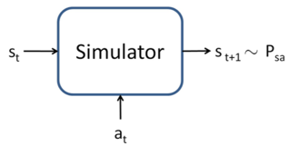
有很多种方法来获取这样的一个模型。其中一个方法就是使用物理模拟（physics simulation）。 例如，在习题集 4 中倒立摆模拟器，就是使用物理定律，给定当前时间 t 和采取的动作 a，假设制导系统的所有参数，比如杆的长度、质量等等，来模拟计算在 t+1 时刻杆所处的位置和方向。另外也可以使用现成的物理模拟软件包，这些软件包将一个机械系统的完整物理描述作为输入，当前状态 st 和动作 at，然后计算出未来几分之一秒的系统状态 st+1。3
3开放动力引擎（Open Dynamics Engine，http://www.ode.com）就是一个开源物理模拟器，可以用来模拟例如倒立摆这样的系统，在强化学习研究领域中，已经相当流行了。
另外一个获取模型的方法，就是从 MDP
中收集的数据来学习生成一个。例如，加入我们在一个 MDP 过程中重复进行了 m 次试验（trials），每一次试验的时间步长（time steps）为 T。这可以用如下方式实现，首先是随机选择动作，然后执行某些特定策略（specific policy），或者也可以用其他方法选择动作。接下来就能够观测到 m 个状态序列，如下所示：

然后就可以使用学习算法，作为一个关于 st 和 at 的函数来预测 st+1。
例如，对于线性模型的学习，可以选择下面的形式：
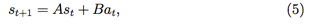
然后使用类似线性回归（linear
regression） 之类的算法。上面的式子中，模型的参数是两个矩阵 A 和 B，然后可以使用在 m 次试验中收集的数据来进行估计，选择：
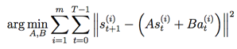
（者对应着对参数（parameters）的最大似然估计（maximum likelihood estimate）。）通过学习得到 A 和 B 之后，一种选择就是构建一个确定性模型（deterministic model），在此模型中，给定一个输入 st 和 at，输出的则是固定的 st+1。具体来说，也就是根据上面的等式（5）来计算 st+1。
或者用另外一种办法，就是建立一个随机模型（stochastic model），在这个模型中，输出的 st+1 是关于输入值的一个随机函数，以如下方式建模：
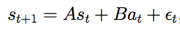
上面式子中的 εt 是噪音项（noise term），通常使用一个正态分布来建模，即 εt ∼ N (0, Σ)。（协方差矩阵（covariance matrix） Σ 也可以从数据中直接估计出来。）
这里，我们把下一个状态 st+1 写成了当前状态和动作的一个线性函数；不过当然也有非线性函数的可能。比如我们学习一个模型 st+1 = Aφs(st) + Bφa(at)，其中的 φs 和 φa 就可以使某些映射了状态和动作的非线性特征。
另外，我们也可以使用非线性的学习算法，例如局部加权线性回归（locally weighted linear regression）进行学习，来将 st+1 作为关于 st 和 at 的函数进行估计。 这些方法也可以用于建立确定性的（deterministic）或者随机的（stochastic）MDP 模拟器。
4.2.2 拟合值迭代（Fitted value iteration）
接下来我们要讲的是拟合值迭代算法（fitted value iteration algorithm），作为对一个连续状态 MDP 中值函数的近似。在这部分钟，我们假设学习问题有一个连续的状态空间 S = Rn，而动作空间 A 则是小规模的离散空间。4
4在实践中，大多数的 MDPs 问题中，动作空间都要远远比状态空间小得多。例如，一辆汽车可能有 6维的状态空间，但是动作空间则只有 2维，即转向和速度控制；倒立的摆有 4维状态空间，而只有 1维的动作空间；一架直升机有 12维状态空间，只有 4维的动作空间。所以对动作空间进行离散化，相比对状态空间进行离散化，遇到的问题通常会少得多。
回忆一下值迭代（value iteration），其中我们使用的更新规则如下所示：

（在第二节当中，我们把值迭代的更新规则写成了求和（summation）的形式：

而没有像刚刚上面这样写成在状态上进行积分的形式；这里采用积分的形式来写，是为了表达我们现在面对的是连续状态的情况，而不再是离散状态。）拟合值迭代（fitted value iteration）的主要思想就是，在一个有限的状态样本 s(1), ... s(m) 上，近似执行这一步骤。具体来说，要用一种监督学习算法（supervised learning algorithm），比如下面选择的就是线性回归算法（linear regression），以此来对值函数（value function）进行近似，这个值函数可以使关于状态的线性或者非线性函数：
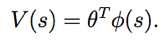
上面的式子中，φ 是对状态的某种适当特征映射（appropriate feature mapping）。对于有限个 m 状态的样本中的每一个状态 s，拟合值迭代算法将要首先计算一个量 y(i)，这个量可以用 R(s)+γ
maxaEs′∼Psa[V(s′)] 来近似（根据等式（7）的右侧部分）。然后使用一个监督学习算法，通过逼近 R(s) + γ maxa Es′∼Psa [V (s′)] 来得到V (s)（或者也可以说是通过逼近到 y(i) 来获取 V (s)）。具体来说，算法如下所示：
1. 从 S 中随机取样 m 个状态 s(1), s(2), . . . s(m) ∈ S。
2. 初始化 θ := 0.
3. 重复 {
对 i = 1, ... , m {
对每一个动作 a ∈ A {
取样 s′1,... , s′k ∼ Ps(i)a (使用一个 MDP 模型).
设 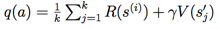
// 因此， q(a) 是对 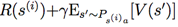的估计。
}
设y(i) = maxa
q(a).
//
因此， y(i) 是对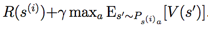的估计。
}
//
在原始的值迭代算法（original value iteration algorithm）中，（离散状态的情况 ）
//
是根据 V (s(i)) = y(i)
来对值函数（value function）进行更新。
//
而在这里的这个算法中，我们需要的让二者近似相等，即 V (s(i)) ≈ y(i)，
//
这可以通过使用监督学习算法（线性回归）来实现。
设 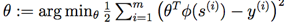
}
以上，我们就写出了一个拟合值迭代算法（fitted value iteration），其中使用线性回归作为算法（linear regression），使 V (s(i)) 逼近 y(i)。这个步骤完全类似在标准监督学习问题（回归问题）中面对 m 个训练集 (x(1),y(1)),(x(2),y(2)),...,(x(m),y(m)) ，而要利用学习得到从 x 到 y 的映射函数的情况；唯一区别无非是这里的 s 扮演了当时 x 的角色。虽然我们上面描述的算法是线性回归，很显然其他的回归算法（例如局部加权线性回归）也都可以使用。
与离散状态集合上进行的的值迭代（value iteration）不同，拟合值迭代（fitted value iteration）并不一定总会收敛（converge）。然而，在实践中，通常都还是能收敛的（或者近似收敛），而且能解决大多数问题。另外还要注意，如果我们使用一个 MDP 的确定性模拟器/模型的话，就可以对拟合值迭代进行简化，设置算法中的 k = 1。这是因为等式（7）当中的期望值成为了对确定性分布（deterministic distribution）的期望，所以一个简单样本（single example）就足够计算该期望了。否则的话，在上面的算法中，就还要取样出 k 个样本，然后取平均值，来作为对期望值的近似（参考在算法伪代码中的 q(a) 的定义）。
最后，拟合值迭代输出的 V，也就是对 V∗ 的一个近似。这同时隐含着对策略函数（policy）的定义。 具体来说，当我们的系统处于某个状态 s 的时候，需要选择一个动作，我们可能会选择的动作为：

这个计算/近似的过程很类似拟合值迭代算法的内部循环体，其中对于每一个动作，我们取样 s′1,...,s′k ∼ Psa 来获得近似期望值（expectation）。（当然，如果模拟器是确定性的，就可以设 k = 1。）
在实际中，通常也有其他方法来实现近似这个步骤。例如，一种很常用的情况就是如果模拟器的形式为 st+1 = f(st,at) + εt，其中的 f 是某种关于状态 s 的确定性函数（例如 f(st,at) = Ast + Bat），而 ε
是均值为 0 的高斯分布的噪音。在这种情况下，可以通过下面的方法来挑选动作：
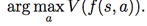
也就是说，这里只是设置 εt = 0（即忽略了模拟器中的噪音项），然后设 k = 1。同样地，这也可以通过在等式（8）中使用下面的近似而推出：

这里的期望是关于随机分布 s′ ∼ Psa 的。所以只要噪音项目 εt 很小，这样的近似通常也是合理的。
然而，对于那些不适用于这些近似的问题，就必须使用模型，取样 k|A| 个状态，以便对上面的期望值进行近似，当然这在计算上的开销就很大了。